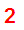
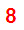
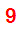

| Purpose |
| Scope |
| Details |
| EnterpriseOne 8.12 and 9.0 releases and later |
Creating a JDE Report definition involves 'Define bursting and delivery options' as one of the steps. This is done via "Add Report Definitions - Bursting and Delivery form".
This document explains the available delivery options for the JD Edwards EnterpriseOne Report Definitions and how to setup these options.
This document is intended for JDE Developers who are responsible for adding and modifying JDE report definitions.
Starting with EnterpriseOne Tools Release 8.98.3.0 and ESU containing enhancement Bug 11019115 for EnterpriseOne 9.0 and Bug 11024413 for EnterpriseOne 8.12, there are enhancements to the Embedded BI Publisher Email Delivery Options.
| Application Release | Bug | ESU |
Description |
|---|---|---|---|
|
8.12 |
Bug 11024413 | JK20069 | BI Publisher OET Enhncment Mods |
|
9.0 |
Bug 11019115 | JL14755 | BI Publisher OET Enhncmnt Mods |
The following enhancements are added:
Please refer to the guide in Document 1086540.1 - "JD Edwards EnterpriseOne Tools Release 8.98 Update 3 Enhanced Embedded BI Publisher Email Delivery Options" for more detail.
The diagram below shows the new Bursting and Delivery Options screen.
Below are the delivery options available including the enhancements. (The highlighted options are the new enhancements added).
| Delivery Options | Description | |
|---|---|---|
| Printer |
Select to direct output to a printer. This is the default printer defined in the P98616 printer application. |
|
|  | Address Book Number E-Mail |
Select this option to deliver output to the email address that is associated with a specific Address Book number. When a report definition is submitted to BI Publisher, all output produced is sent to the email address. Enter the EnterpriseOne Address Book Number that is defined in P01012 Address Book application. Note: The address book number should have an email address set up in Email Preference. Refer to Workflow Setup / External E-Mail Setup for Notifications with Releases 8.9 and Newer for more detail on how to set up external e-mail. |
 |
Distribution List Type | Select this option to deliver output to all members of the distribution list type who are associated with the provided Address Book number. If this 'Distribution List Type' check box is selected, the above 'Address Book Number E-Mail' field need to be entered with a Parent Address Book Number. This Parent Address book number is usually of search type equals to 'M'-Mail Distribution List or 'DL'-Workflow Distribution List. The Distribution List need to be defined in P02150 Group Revisions application. You can only set up Distribution List for Group Processing. Hierarchical Distribution List is not supported for BI Publisher output. Refer to the "Workflow Tools Guide" for more information on setting up Distribution List. All the child members address book numbers set up in the distribution list must be set up with External Email address as email will be sent to all the child members. Only the 0 record in Who's Who is used for email. If you require additional email addresses to be included for one Address Book number, add them into the 0 record and they will be included in the distribution emails. Enter the distribution list type which is the "Structure Type" used when you defined the distribution list in P02150. This value is from the UDC 01|TS. If the distribution list type is not entered, the output is sent to the primary email address associated with the Address Book number for all the members in the distribution list. |
 |
Consolidate Bursted Report for Address Number |
Select this option if you want to deliver all the bursted output in a single report to the email address associated with the provided Address Book number. |
| E-Mail Address |
Select to deliver output to a specific email address. This can be any external email address (e.g. xxxxxx@domain.com). Please take note of an issue that is mentioned in SMTP Error 553 Unable to Send Mail to Internet E-mail Address. If you are attempting to send E-mail to a domain that is not recognized by the SMTP server or if the SMTP server blocks external internet mail. You will need to ask the administrator of the SMTP server to give access for the required |
|
 |
Consolidate Bursted Report for Email Address | Select this option if you want to deliver all the bursted output in a single report to the email address. |
 |
Data Driven E-Mail | Select to deliver the output to email recipients based on the data generated by the source report version. 'Burst Report' need to be selected and 'Burst Field' need to be set up. Data Driven Recipients also need to be set up. Typically, in the 'Data Driven Recipient' field, the Address Number data field is used. See Example of Using Data Driven E-Mail with Embedded BI Publisher for EnterpriseOne for an example of how to use Data Driven E-Mail option. |
|  | Distribution List Type | Select to deliver output to all members of a distribution list and distribution list type that are associated with the Data. In this case the Data (Data Driven Recipient) is assumed to be a distribution list address number. Enter the distribution list type which is the "Structure Type" used when you defined the distribution list in P02150. This value is from the UDC 01|TS. If the distribution list type is not entered, the output is sent to the primary email address associated with the Address Book number. |
|  | Language | Using the Search button, select the language in which you want the output delivered. Clicking on the Search button will direct you to the "Select User Define Code" form where you can select your language preference from the H95/XL user defined code (UDC). |
NOTE: